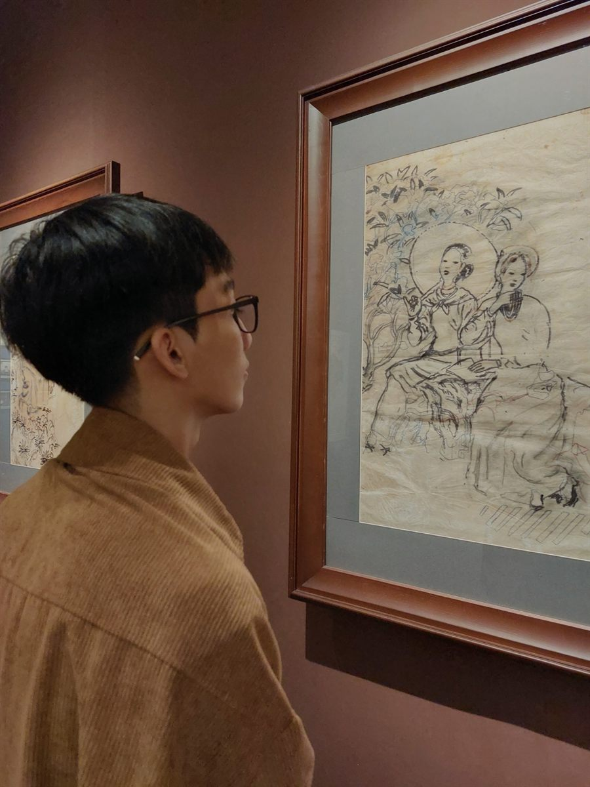
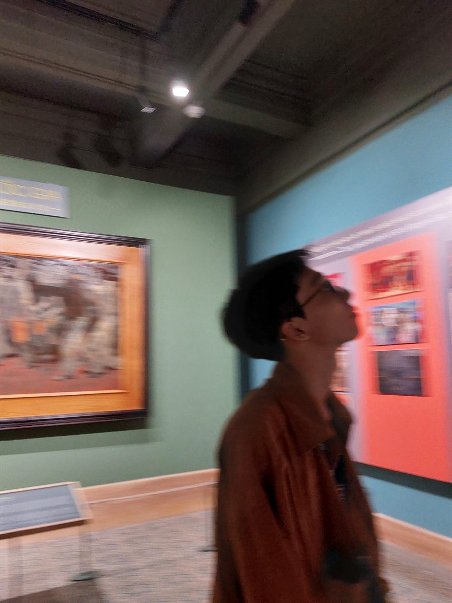

National Key Laboratory of Digital Control and System Engineering
Manager
- Period
- — Hiện tại
- Location
- Thành phố Hồ Chí Minh
ME-01 Mechanical Design Engineer
Kỹ sư cơ khí chuyên ngành thiết kế máy, theo đuổi cách tiếp cận có hệ thống từ bài toán, mô hình, cơ cấu đến giải pháp có thể chế tạo. Tôi quan tâm đến nghiên cứu, tự động hóa và ứng dụng AI để nâng cao chất lượng thiết kế.
Fig. 01 / Engineer profile HCMC, VN
01 / Engineering profile
Tôi nhìn thiết kế máy như một quá trình ra quyết định có kiểm chứng: hiểu yêu cầu, phân rã chức năng, xây dựng cơ cấu, đánh giá rủi ro và lặp lại bằng dữ liệu.
Khoa học và nghiên cứu giúp tôi đặt câu hỏi tốt hơn. AI và tự động hóa là công cụ để tăng tốc phân tích, chuẩn hóa tác vụ và mở rộng khả năng của người kỹ sư, không thay thế tư duy nền tảng.
Manager
Mechanical Engineering
02 / Technical focus
Giao điểm giữa cơ khí nền tảng, nghiên cứu ứng dụng và công nghệ hỗ trợ kỹ thuật.
Phân tích chức năng, xây dựng nguyên lý, thiết kế chi tiết và cân bằng giữa hiệu năng, độ tin cậy, khả năng chế tạo và bảo trì.
Chuyển giả thuyết thành mô hình, thiết lập tiêu chí đánh giá và dùng kết quả phân tích để định hướng quyết định thiết kế.
Quan tâm đến cách cảm biến, điều khiển và cơ cấu chấp hành kết hợp thành một hệ thống vận hành ổn định, có thể đo lường và cải tiến.
Khai thác AI cho nghiên cứu tài liệu, quản lý tri thức, tự động hóa tác vụ và hỗ trợ khám phá phương án trong quy trình thiết kế.
03 / Publications
Hồ sơ các bài báo, báo cáo kỹ thuật và công trình nghiên cứu, được lập chỉ mục tự động từ thư mục paper.
Thêm PDF vào papers/ hoặc paper/, sau đó chạy
npm run build. Giao diện sẽ được tạo tự động.
04 / Observation
Quan sát nghệ thuật và không gian cũng là cách rèn luyện cảm nhận về hình khối, tỷ lệ, cấu trúc và con người.


05 / Contact
Tôi sẵn sàng trao đổi về thiết kế máy, ý tưởng nghiên cứu, tự động hóa hoặc những ứng dụng AI có giá trị thực tế cho kỹ thuật.